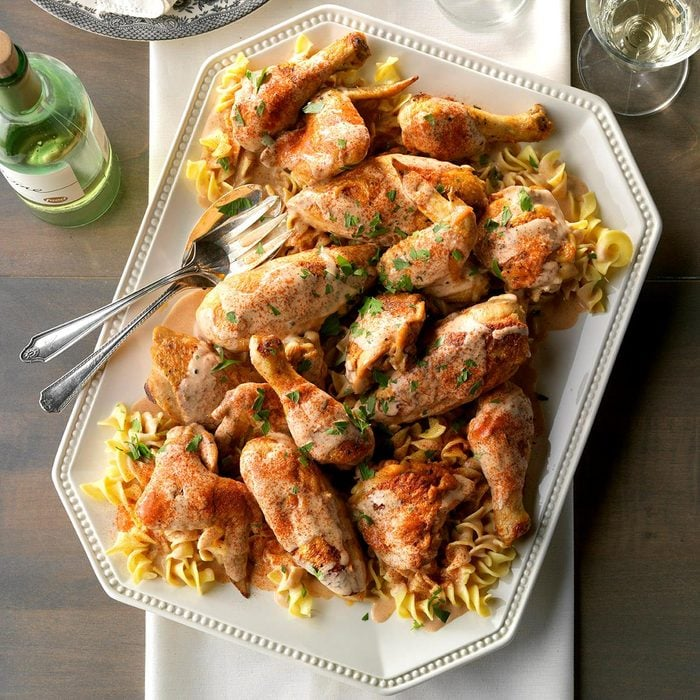

Chicken Paprikash

Description
Some recipes for chicken paprikash include vegetables like bell peppers and celery, but not my Grandmother Alta’s. Hers was a simple combination of chicken, onions, garlic, paprika and sour cream. —Lily Julow, Lawrenceville, Georgia
Ingredients
- 2 broiler/fryer chickens (about 3-1/2 to 4 pounds each), cut into 8 pieces each
- 2 teaspoons kosher salt
- 1 teaspoon pepper
- 2 tablespoons peanut oil or canola oil
- 2 medium onions, halved and sliced
- 2 large garlic cloves, chopped
- 3 tablespoons all-purpose flour
- 1 tablespoon sweet Hungarian paprika
- 2 cups hot chicken broth or water
- 1 cup sour cream
- Optional: Minced fresh parsley and additional sweet Hungarian paprika
- Hot cooked noodles or mashed potatoes
Steps
- Season chicken with kosher salt and pepper. In a Dutch oven, heat peanut oil over medium-high heat. Brown chicken in batches. Remove with a slotted spoon; drain and keep warm.
- Reduce heat to medium-low. Add onions; cook, stirring to loosen browned bits from pan, until onions begin to soften, 6-8 minutes. Add garlic; cook 1 minute longer.
- Stir in flour and paprika; reduce heat to low. Cook until paprika is fragrant, 3-5 minutes. Add broth; cook, stirring constantly, until smooth, 6-8 minutes. Return chicken to pan; simmer, covered, until a thermometer inserted into deepest part of thigh reads 170°, about 30 minutes. Transfer chicken to a serving platter.
- Skim fat. Stir in sour cream; heat just until warmed through, 3-5 minutes (do not allow to boil). If desired, sprinkle with parsley and additional paprika. Serve with hot cooked noodles or mashed potatoes.